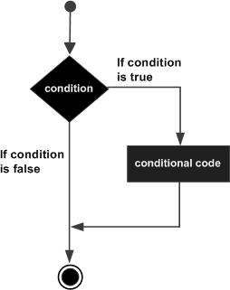

Lua 流程控制
Lua 编程语言流程控制语句通过程序设定一个或多个条件语句来设定。在条件为 true 时执行指定程序代码，在条件为 false 时执行其他指定代码。
控制结构的条件表达式结果可以是任何值，其中 false 和 nil 为假，true 和 非nil 都为真，包括 0 和负数。
--[ 0 为 true ]
if(0) then
print("0 为 true")
end
if(1) then
print("1 为 true")
end
if(-1) then
print("-1 为 true")
end
输出结果为：
0 为 true
1 为 true
-1 为 true
一、if 语句
由一个布尔表达式作为条件判断，其后紧跟其他语句组成。
语法格式如下：
if(布尔表达式) then
--[ 在布尔表达式为 true 时执行的语句 --]
ends
流程图如下

如下示例：
a = 10;
if(a < 20) then
print("a 小于 20" );
end
print("a 的值为:", a);
二、if...else 语句
if 语句可以与 else 语句搭配使用, 在 if 条件表达式为 false 时执行 else 语句代码块。
语法格式如下：
if(布尔表达式) then
--[ 布尔表达式为 true 时执行该语句块 --]
else
--[ 布尔表达式为 false 时执行该语句块 --]
end
流程图如下

如下示例：
a = 100;
if(a < 20) then
print("a 小于 20" )
else
print("a 大于 20" )
end
print("a 的值为 :", a)
三、if...else if...else 语句
在 if 条件表达式为 false 时执行 else if...else 语句代码块，用于检测多个条件语句。
语法格式：
if(布尔表达式 1)
then
--[ 在布尔表达式 1 为 true 时执行该语句块 --]
elseif(布尔表达式 2)
--[ 在布尔表达式 2 为 true 时执行该语句块 --]
elseif(布尔表达式 3)
--[ 在布尔表达式 3 为 true 时执行该语句块 --]
else
--[ 如果以上布尔表达式都不为 true 则执行该语句块 --]
end
如下示例：
a = 100
if(a == 10) then
print("a 的值为 10" )
elseif( a == 20 ) then
print("a 的值为 20" )
elseif( a == 30 ) then
print("a 的值为 30" )
else
print("没有匹配 a 的值" )
end
print("a 的真实值为: ", a)
执行结果：
没有匹配 a 的值
a 的真实值为: 100